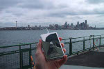
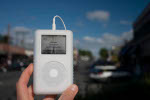
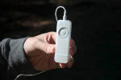
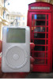
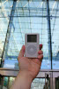

Welcome to the place to show off your iPod, wherever you might be. Wanna join the fun? All you need is any iPod from the actually iPod to the latest iPod Nano, the smallenst iPod Shuffle the Ipod Photo, and a digital camera. Just take a snapshot in your favourite location and we'll be glad to post it on myPod. So what on you waiting for?
  Me and my iPod in Seattle! You can see rain clouds and Space Needle. You can't see the 628 coffee shops.
Here are some iPod photos around Birmingham. We've obviously got some passionate folks over here who love their iPods. Check out the classic red British telephone box!
 